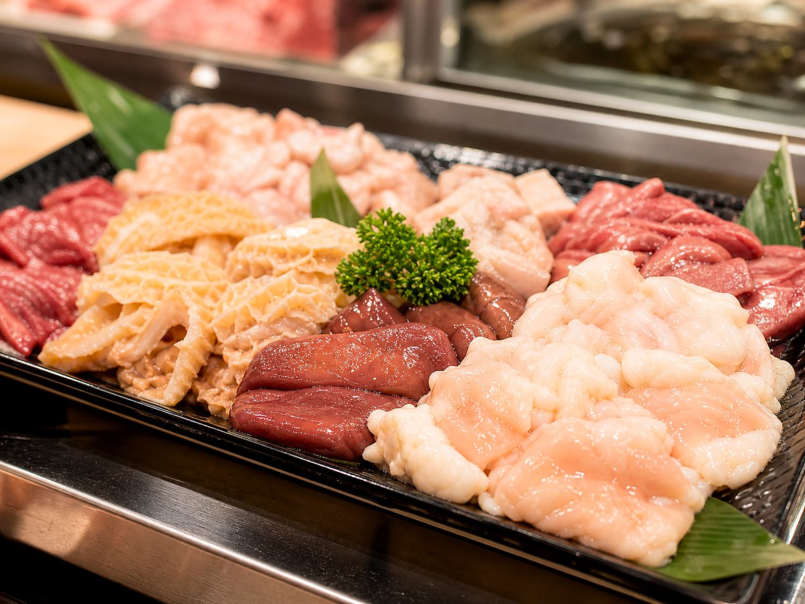
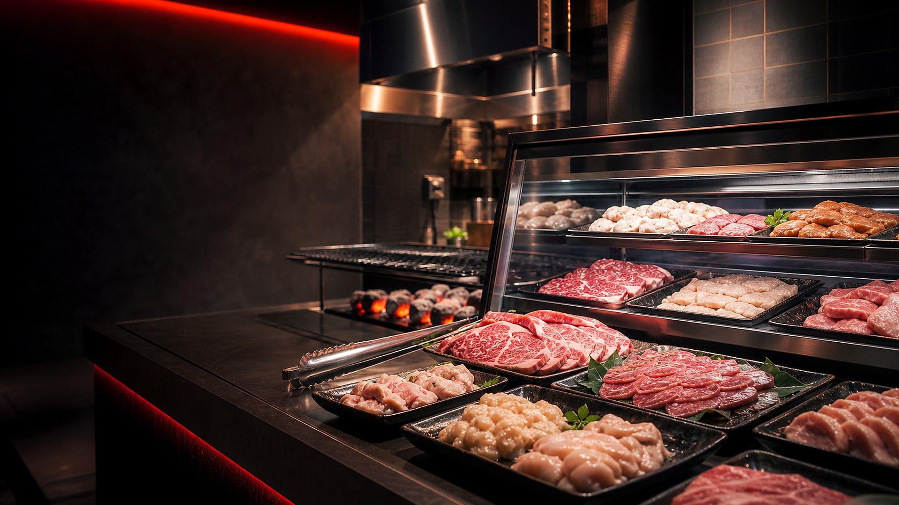
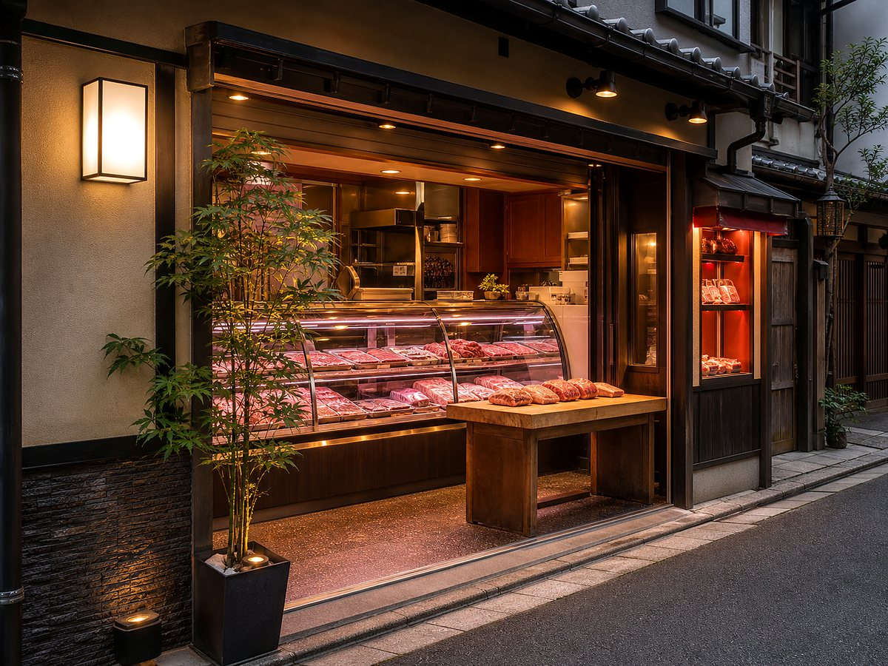
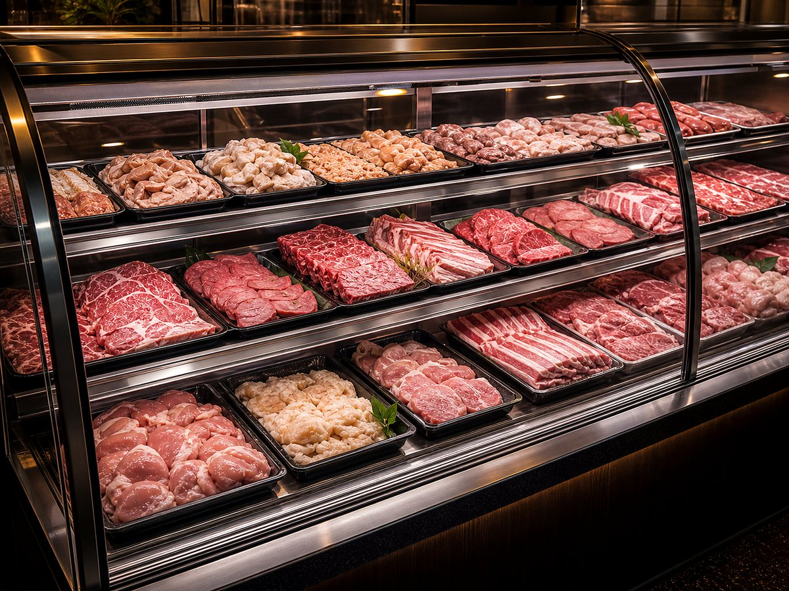
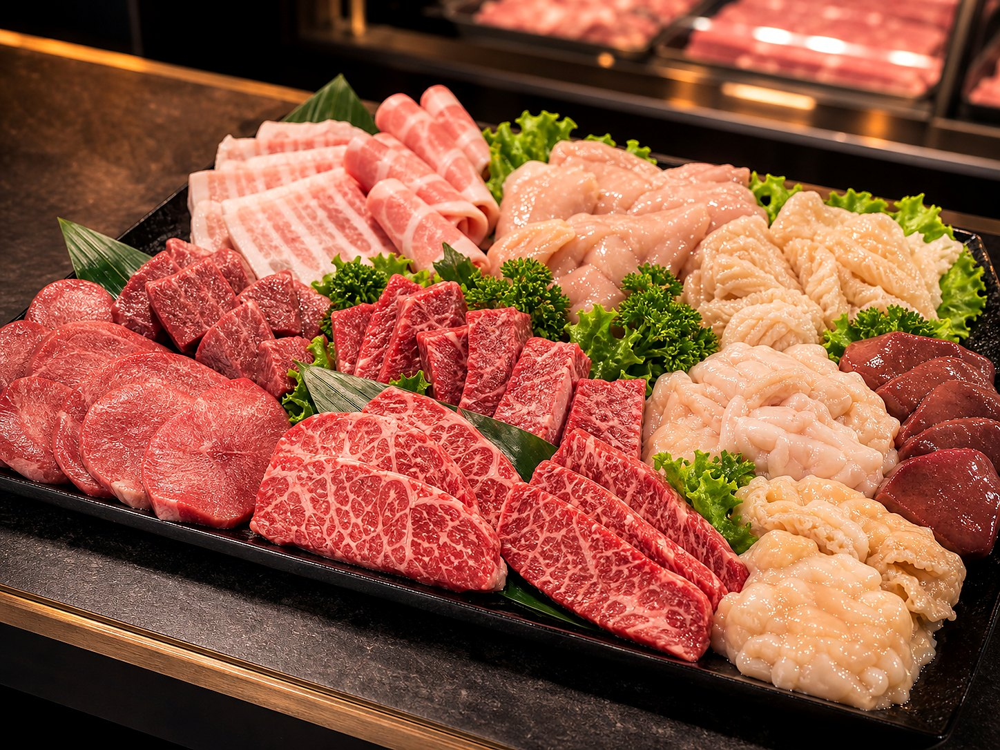
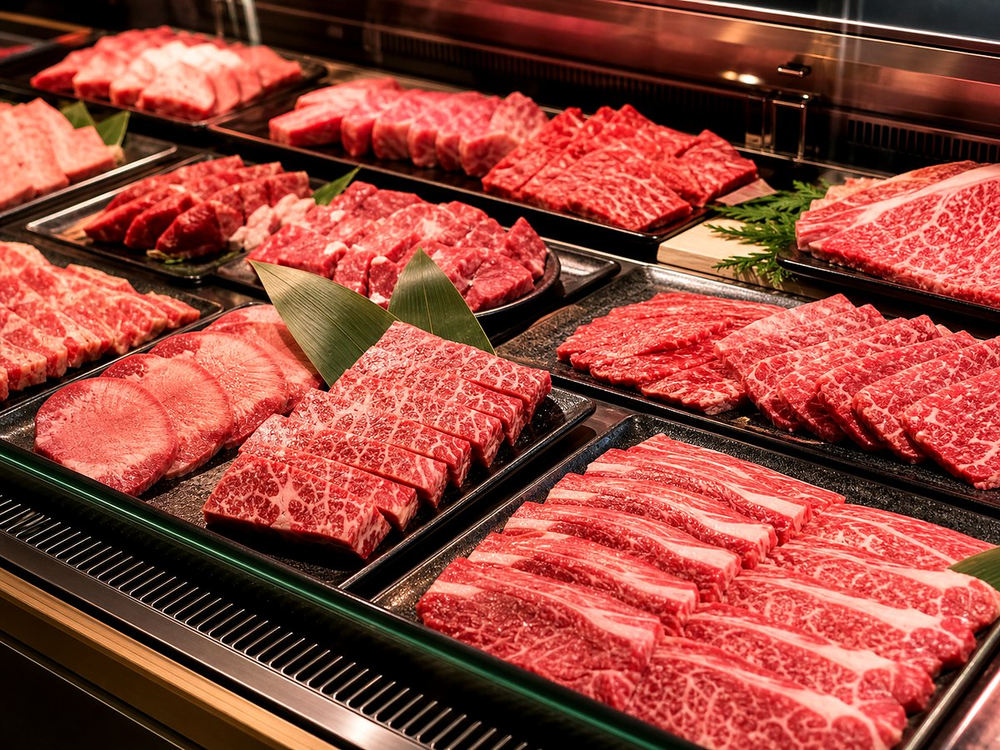
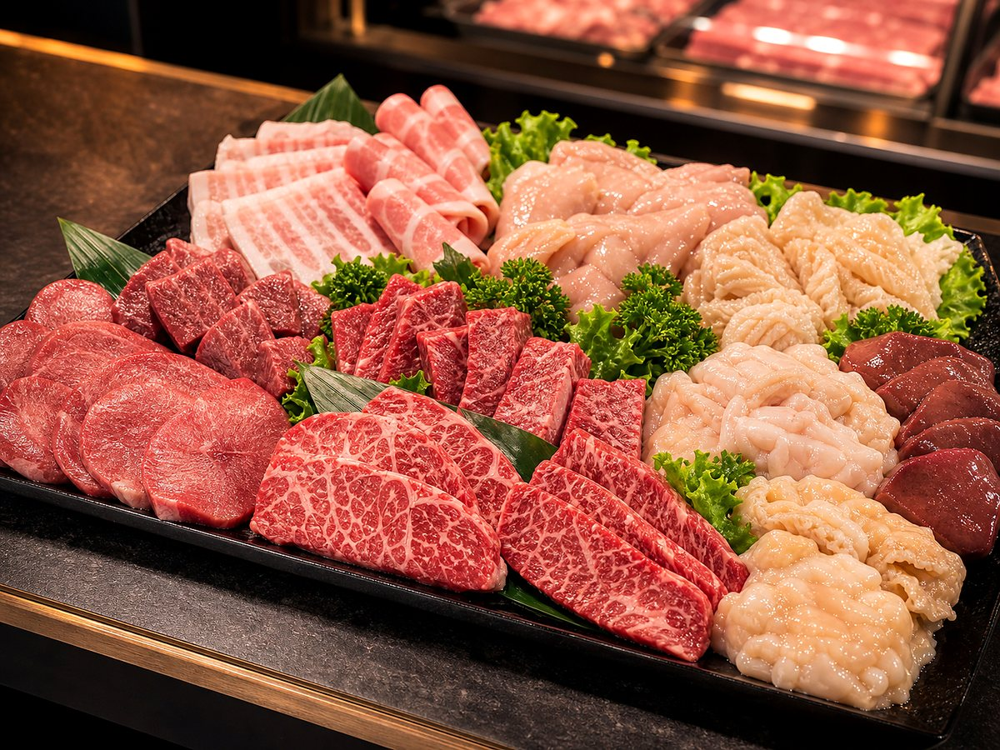
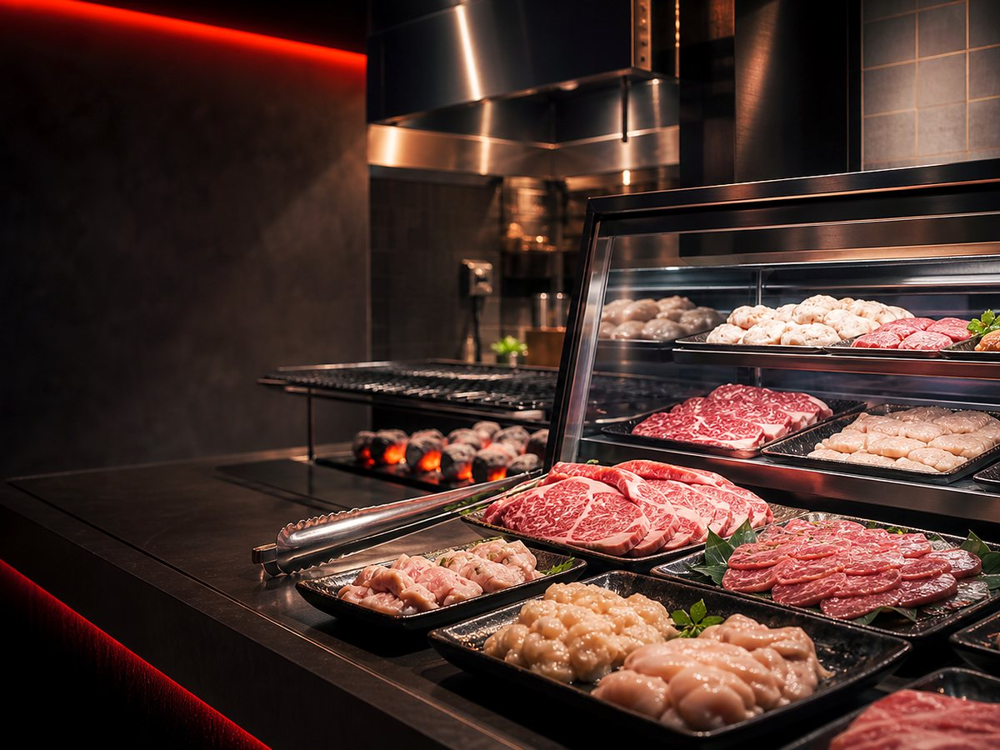

ホルモン
焼肉や鍋に使いやすい、新鮮なホルモン各種。
価格記入欄あり
京都・上京区の精肉店
Fresh Japanese meat and horumon in Kyoto
焼肉、BBQ、ご家庭の料理に。新鮮なお肉を丁寧にご用意しています。
にし田ホルモンは、京都市上京区にある地域密着型の精肉店です。新鮮なホルモン、焼肉用のお肉、家庭料理に使いやすいお肉を丁寧にご用意しています。




焼肉や鍋に使いやすい、新鮮なホルモン各種。
価格記入欄あり
カルビ、ハラミ、タンなど焼肉に合う部位。
価格記入欄あり焼肉で楽しめる、食感のある牛ホルモン系カット。
価格記入欄あり
脂の旨みと噛みごたえが魅力の定番ホルモン。
価格記入欄あり焼きやすく、香ばしさを楽しめる細めのホルモン。
価格記入欄あり名前の通り、歯切れのよい食感が楽しめる部位。
価格記入欄あり旨みが濃く、焼肉で人気の高い牛ハラミ。
価格記入欄あり
脂の甘みと肉の旨みを楽しめる焼肉向けカット。
店頭で確認価格欄は編集用です。公開前に正確な価格を入力してください。
価格は仕入れ状況により変更となる場合があります。詳しくは店舗までお問い合わせください。
現金以外の支払い方法は、公開前に店舗へ確認してください。未確認の方法は確定情報として掲載しません。
現在はWeb用に生成したビジュアルを使用しています。公開時は店舗の実写真や許可済みのInstagram写真に差し替えできます。
焼肉、BBQ、鍋、夕食など。
必要な量を相談しやすくなります。
電話または店頭で確認できます。
店頭で新鮮なお肉を受け取ります。
京都市上京区丸太町御前東入る下之町400。近くに来たらGoogle Mapsで現在地から確認できます。
在庫状況により異なります。電話で店舗へお問い合わせください。
はい。焼肉、BBQ、自炊用など用途を伝えると相談しやすいです。
仕入れ状況により変わる場合があります。詳しくは店頭または電話で確認してください。